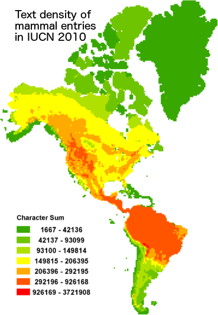

From the original site
This archived piece preserves its original text and historical context.
Species Biodiversity Database Analysis
One of the earliest projects I was involved with at Stanford, this involved an intense examination of the IUCN Red List database and geospatial data, the Catalog of Life, the BirdLife database and geospatial data, and to a lessened degree, Wikipedia and other species databases. It involved a potpourri of techniques, including NLP, GIS and network visualization (though no network analysis) and created a number of interesting data visualization experiments, almost none of which ever saw the light of day.

What went right
Some of the data visualization pieces were extremely compelling. The map shown here is a density map of text devoted to species in the IUCN Red List, and contrasts with the density of species, highlighting charismatic species and ecosystems, many of which are not suprisingly in the United States.
What went wrong
The project was so purely exploratory that there was never a cohesive plan for publication. That's why after this project, I made it a formal requirement that digital humanities projects I supported at Stanford would strive to produce interactive scholarly works, such as the later ORBIS and Kindred Britain.
The next version would have
Species biodiversity analysis is something that should be opened up to the public. There are a few sites that focus on citizen science for biodiversity, but analysis like this would highlight the problem of charismatic species and ecosystems and hopefully lead to more sensible biodiversity policy.